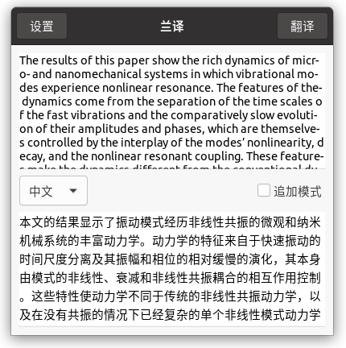
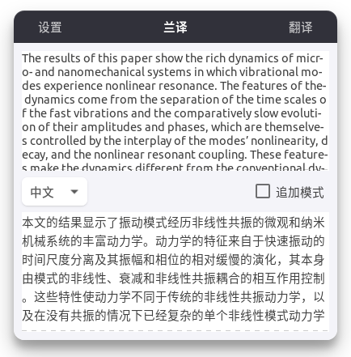
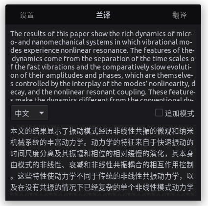

从零开始-开发ubuntu版翻译软件
开发结果
先上图，开发结果如图：
软件可以随着系统主题，自动变化，翻译窗口如下：
| 系统默认主题 yaru | 第三方主题layan | 第三方主题kimi |
|---|---|---|
|  |  |  |
知识储备：
- 会一点点
python，起码能运行python程序 - 在使用
ubuntu20.04系统
简介
灵感来源于这个软件：indicator-sysmonitor开源项目，so，我觉得我也可以……
目前基础功能已经完成如下
- 复制即可自动翻译，状态栏可暂停复制即翻译
- 系统截图到剪贴板，自动OCR识别并翻译
- 有时候一句话在文献里分成上下两页，复制半句翻译有问题，这时候点击左上角
追加，接下来复制的内容，会和前一次的复制内容，一起翻译
源码以及具体如何使用看这里：
开发过程
环境依赖
用的python语言，使用 Gtk3 相关的接口，在ubuntu20.04下可以直接开发，常驻状态栏用到了依赖 gir1.2-appindicator3-0.1，python用到了依赖 requests
如果是ubuntu20.04最小安装，需要如下
1 | sudo apt install make git python3-pip gir1.2-appindicator3-0.1 |
开发工具
用的 vscode，点我下载，vscode侧栏安装几个依赖，搜索 git 安装前4个依赖，搜索 python 安装第一个依赖
开发简介
界面相关两个文件 ldr-translate.py 和 ui_translate.py
ldr-translate.py：入口文件，运行它即可，或创建状态栏上的翻译小图标，并绑定复制信号，系统复制即可调用翻译窗口- 状态栏 appindicator.Indicator()
- 菜单：Gtk.Menu()
- 翻译窗口显示或关闭：Gtk.MenuItem()
- 复制即翻译：开、关：Gtk.MenuItem()
- 分割线：Gtk.SeparatorMenuItem()
- 版本版权信息：Gtk.MenuItem()
- 版权信息窗口：Gtk.AboutDialog()
- 完全退出：Gtk.MenuItem()
- 菜单：Gtk.Menu()
- 状态栏 appindicator.Indicator()
ui_translate.py：翻译窗口，界面关系如下- 翻译主界面：Gtk.Window
- 标题栏：Gtk.HeaderBar()
- 设置：开发中：Gtk.Button()
- 关闭：Gtk.Button()
- 主界面：Gtk.Box()
- 显示复制文本：
- Gtk.ScrolledWindow()
- Gtk.TextView()
- 中间菜单：Gtk.Box()
- 翻译按钮：Gtk.Button()
- 翻译为某种语言：Gtk.ComboBoxText()
- 追加模式：Gtk.CheckButton()
- 显示翻译以后的文本：
- Gtk.ScrolledWindow()
- Gtk.TextView()
- 显示复制文本：
- 标题栏：Gtk.HeaderBar()
- 翻译主界面：Gtk.Window
config.py：配置信息，比如百度等接口apiapi/translate.py：整合百度、腾讯等接口，方便扩展api/server/baidu.py：百度OCR和翻译接口/ui/icon.png、/ui/icon.svg：软件图标data：一些缓存文件或保存的配置
资料
上面这些控件怎么用，我一开始百度的，但是不靠谱，最后才找到一个好用的api文档，有解释，有示例，有图片，看这里
用户安装
目前还不会打包，直接使用的make，挺简单，用户下载并解压源码，打开终端，进入源码文件夹，输入
1 | make install |
安装完成，终端输入 ldr-translate 或者直接点击 兰译 图标  ，即可运行
，即可运行
具体怎么使用，看源码的
README.md
本文作者：yuhldr
本文地址： https://yuhldr.github.io/posts/f85bb316.html
版权声明：转载请注明出处！